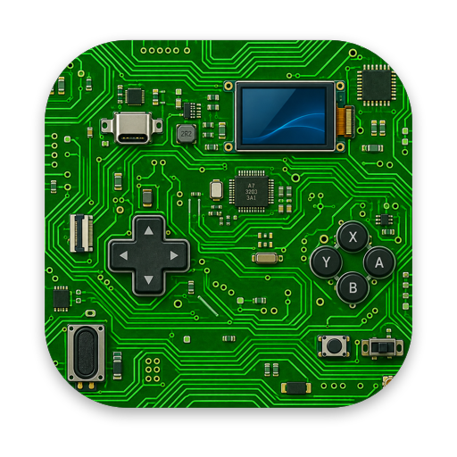
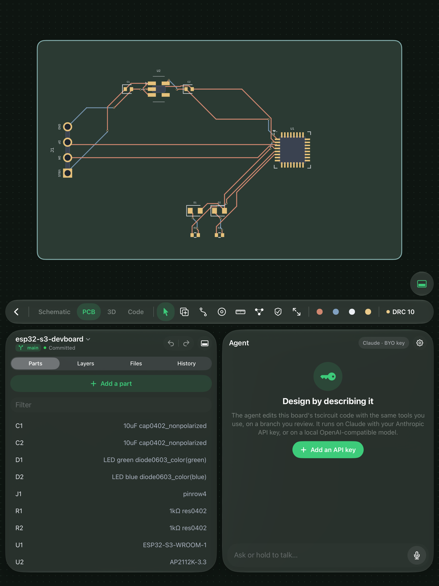
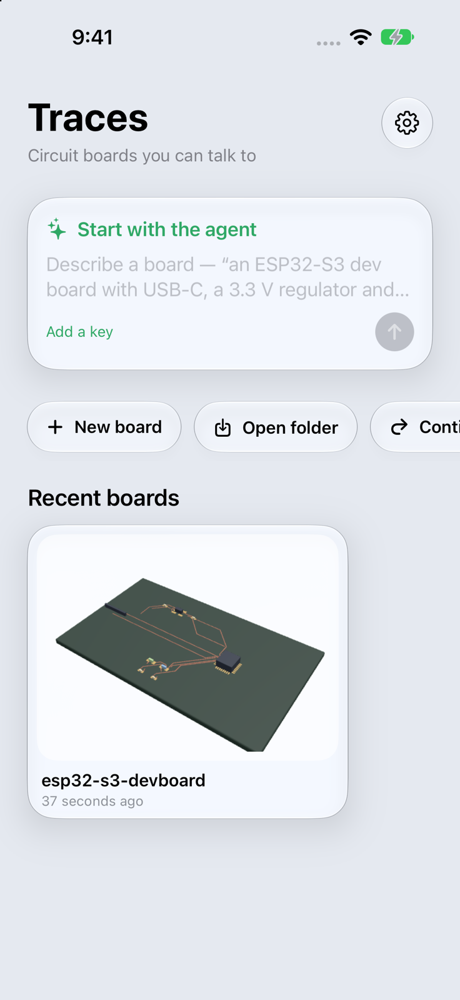
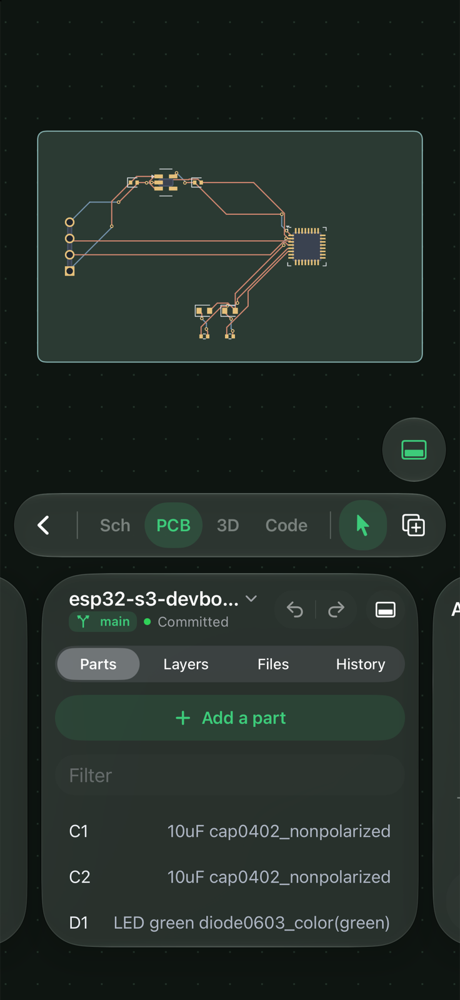

TracesDesign PCBs as tscircuit code on your Mac, iPad and iPhone. Describe a board and the built-in agent writes it, places parts, routes and runs DRC, on a branch you review.


Every project is a plain tscircuit folder with its own git history, so it opens in the tsci CLI too. Traces runs the open-source tscircuit packages on device and draws them natively.
Ask for a board or a change. The agent edits code with the same tools you use, compiles and runs DRC, and leaves a diff for you to accept or discard.
Four live views of one design, compiled 300 ms after each edit. Drag, rotate, place vias and route by touch; edits rewrite the source.
Search JLCPCB and DigiKey. Choosing a part imports its real symbol and footprint, with supplier part numbers attached.
Export Gerbers, drill files, BOM and pick-and-place in one zip, named after the commit. Export is blocked while DRC has errors.
Claude with your Anthropic API key, or any local OpenAI-compatible server such as LM Studio. Keys stay in the Keychain.
Turn on MCP in Settings and Claude Code or Claude Desktop can drive the open board with the same tools.
One app for Mac, iPad and iPhone. The Mac app is signed and notarized; the iPhone and iPad app installs over the air through SelfStore.
Traces.dmg.~/Documents/Traces.To connect Claude Code, turn on MCP in Settings, then:
claude mcp add traces -- /Applications/Traces.app/Contents/MacOS/Traces --mcpsyousif94/traces. Its selfstore.yml points at a prebuilt Traces-iOS.ipa.Or build it yourself from source with Xcode (see the README).
The same studio everywhere: the live view full-bleed, one glass bar, and panels for parts, layers, files, history and the agent.
